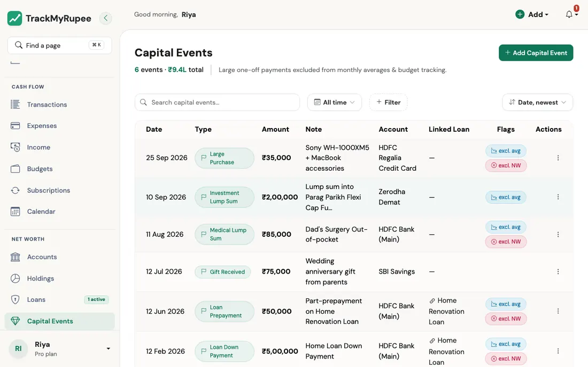
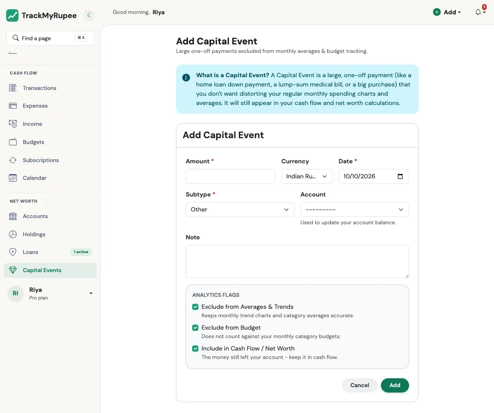
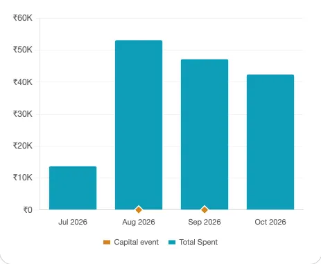

Capital Events¶
Record large, one-time payments without distorting your regular monthly expense analytics.
1. What Is a Capital Event¶
A Capital Event is a large, one-off payment that you do not want skewing your regular monthly spending charts.
Examples include a home loan down payment, a lump-sum medical bill, a car purchase, or a big renovation payment.
The rule of thumb is this: if the amount is large enough to make your average monthly expense chart look abnormal for several months, log it as a Capital Event instead of a regular expense.
2. What a Capital Event Does (and the Three Switches)¶
By default a Capital Event is kept out of your everyday numbers but still moves your money. Three switches on the form control this. They are all on when you start, and you can change each one per event:
| Switch | When it is on (the default) | When you turn it off |
|---|---|---|
| Exclude from Averages & Trends | The event does not count as spending in your monthly totals, your savings rate, or your trend charts. It shows as a small marker on the dashboard charts instead. | It counts as spending for that month, like a regular expense. |
| Exclude from Budget | It does not count against your category budgets. | It counts towards the budget for the category with the same name as its subtype (for example Large Purchase), on the Budget page, in your Dashboard breakdown, and in budget alerts. |
| Include in Cash Flow / Net Worth | The account you chose goes down by the amount, so your balance and net worth stay true. | The account balance is not touched, though the event still records which account it relates to. Use this when the payment was made on your behalf and the money never left that account. |
So the usual one-off payment leaves your Dining Out, Transport, and Groceries budget bars alone, and your Analytics averages keep reflecting your real recurring spend, while your account balance still drops by the right amount.
Account balances follow the event
Add it and the account goes down. Edit the amount and it changes by the difference. Move it to another account and the money moves with it. Delete it, or turn off Include in Cash Flow / Net Worth, and the account gets the money back. If you pick an account in another currency, the account is charged in its own currency.
3. Opening the Capital Event Form¶

- Desktop: Navigate to Sidebar → Capital Events → Add.
- Mobile: Go to More → Capital Events → Add.
The form is titled "Add Capital Event". You can also start it from an existing expense, see Converting Between Expenses and Capital Events.
4. Filling the Form¶
Complete the following fields:

- Amount (required): The total amount of the payment. It must be greater than zero.
- Currency: Defaults to your profile currency.
- Date (required): The date the payment was made. It cannot be in the future.
- Subtype (required): What kind of event it is. The choices are Loan Down Payment, Loan Prepayment, Large Purchase, Medical Lump Sum, Gift Given, Gift Received, Investment Lump Sum, and Other.
- Account (required): The account the money came from. If you forget it, the form shows a message under the field and nothing is saved. This keeps every payment, such as a loan prepayment, traceable to an account.
- Linked Loan (optional): Connect a down payment or prepayment to one of your active loans.
- Note (optional): A short description, such as "Kitchen renovation advance".
- The three switches described above.
Click Save when done.
5. Linking a Capital Event to a Loan¶
If you are recording a home loan down payment or a lump-sum prepayment on an existing loan, use the Linked Loan field to connect the Capital Event to that loan record.
Only events with the subtype Loan Down Payment or Loan Prepayment reduce the loan's remaining principal. Every rupee of one counts as principal paid, on top of what your EMIs have already repaid, so the loan's outstanding balance and your total liabilities both go down. Deleting the event gives the principal back. A linked event with any other subtype is only attached to the loan for reference and does not change the balance. The loan detail page shows the capital payments next to your EMIs.
Real-world use case
Kavya pays a Rs. 4,00,000 home renovation advance in July. She logs it as a Capital Event with Subtype: Large Purchase, Account: HDFC Savings, Amount: 4,00,000, rather than as a regular expense. Her HDFC Savings account balance drops correctly and her net worth reflects the outflow. But her Dining Out, Groceries, and Transport budget bars are unaffected, and the Analytics average monthly expense chart for the rest of the year still shows her real recurring spend instead of a Rs. 4,00,000 spike warping every future month-over-month comparison.
6. Seeing Capital Events on Your Charts¶
Capital Events that are kept out of your spending averages (the default) are not hidden: you still want to see when they happened. So they appear on the spending trend charts on your Dashboard as small amber diamonds sitting on the bottom axis, directly under the day (or month) they happened. An event you have switched to count as spending is already part of the line, so it gets no diamond.

- On the Daily Expenses chart (a single month), look for a diamond under the date of the event.
- On the Expenses Trend chart (a year), a diamond sits under each month that has an event.
- Hover over that day or month, and the tooltip lists the event by name and amount alongside the usual figures, for example Investment Lump Sum, ₹1L.
- The chart legend has a matching Capital event entry, so the diamond is never a mystery.
A diamond never changes the height of the spending line or bars. It is a marker, like a pin on a map, and not a spend.
Some Flows create Capital Events for you
You will not always have to add them by hand. The TMR Flows create them where it makes sense: a loan's down payment, an FD's principal, a gold purchase, and a car bought with cash.
7. The Capital Events Page, Editing, and Deleting¶
The Capital Events page opens on the current period and shows the number of events and their total (in your own currency). You can search the note, filter by event type, account, or amount, and sort by date or amount. See Search and Filters.
Open an event to edit any field. To delete one, confirm the prompt. The account gets its money back.
Converting Between Expenses and Capital Events¶
- Expense to Capital Event: If you logged something big as an ordinary expense, choose Convert to Capital Event in its menu on the Expenses list. The expense is replaced by an equal Capital Event for the same date, account, and amount, so the money is charged once, not twice.
- Capital Event to Expense: On the Capital Events page, choose Convert to Expense. The event becomes a regular expense named after its note (or its subtype), filed under the subtype's name. An expense always comes out of an account, so an event that never moved money (Include in Cash Flow / Net Worth turned off) or has no account (older events) cannot be converted. Edit it first, choose an account and turn the switch on. The same applies to converting an older expense that has no account into a Capital Event.
Recurring Capital Events
A repeating one-off, such as an instalment on a purchase, can be set up as a Capital Event subscription. See Recurring Transactions and Subscriptions.